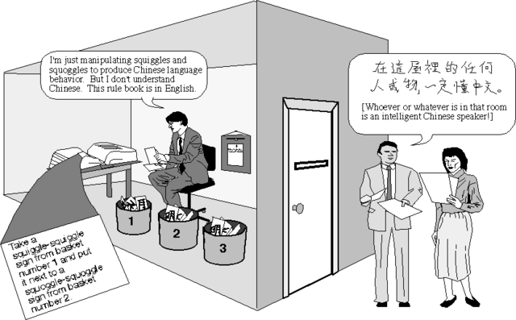

The “Chinese room” argument
(Disclaimer: All this talk of Chinese, as a language that is not understood by certain parties involved, is clearly ethnocentric; but the use of Chinese in this argument is engrained in the culture of the philosophy of AI.)
Quoted from “Minds, Brains, and Programs” (PDF) (full cite) by John Searle:
What psychological and philosophical significance should we attach to recent efforts at computer simulations of human cognitive capacities? In answering this question, I find it useful to distinguish what I will call “strong” AI from “weak” or “cautious” AI.
Weak AI
According to weak AI, the principal value of the computer in the study of the mind is that it gives us a very powerful tool. For example, it enables us to formulate and test hypotheses in a more rigorous and precise fashion. (emphasis added)
Strong AI
But according to strong AI, the computer is not merely a tool in the study of the mind; rather, the appropriately programmed computer really is a mind, in the sense that computers given the right programs can be literally said to understand and have other cognitive states. In strong AI, because the programmed computer has cognitive states, the programs are not mere tools that enable us to test psychological explanations; rather, the programs are themselves the explanations. (emphasis added)
The setup
Searle spends a moment describing a program by Schank that processes stories. An example:
A man went into a restaurant and ordered a hamburger. When the hamburger arrived it was burned to a crisp, and the man stormed out of the restaurant angrily, without paying for the hamburger or leaving a tip.
If you are asked, “Did the man eat the hamburger?” what would you answer?
Now suppose the story is:
A man went into a restaurant and ordered a hamburger; when the hamburger came he was very pleased with it; and as he left the restaurant he gave the waitress a large tip before paying his bill.”
Again, did the man eat the hamburger?
Regardless of your answer (and its plausible qualifications, if you are really thinking about this), I expect you can imagine what Schank and Searle expect your answers to be.
Schank’s program could answer these questions after “reading” those stories. His program used a data structure called “scripts” that indicated when a person goes to a restaurant, certain other things usually happen. When the person eats his meal and pays for it, he is happy with it; when he does not eat it, he is not happy with it, and so on. A “script” is a scenario; some parts may be missing from the story, but the script tells what those parts must be.
Now, Searle claims that Schank claims that the computer (running the program) is not only simulating a human ability but also:
- can literally be said to understand the story and provide the answers to questions, and
- that what the machine and its program do explains the human ability to understand the story and answer questions about it.
Searle says both claims are unsupported by Schanks work (viz., the program he wrote).
So, to prove this, Searle chooses to investigate what it would be like for a mind to work like a theory of mind says it works. He sets up the following scenario:
- Suppose I am locked in a room with a large book of Chinese writing.
- Suppose I know no Chinese, written or spoken, and I can’t even reliably recognize it (as opposed to Japanese or bogus characters).
- Suppose I have another book of Chinese writing together with a set of rules for correlating the first book’s entries with the second book’s.
- Suppose these rules are in English (which I do understand).
- Suppose I am given a third book of Chinese, also with some
instructions in English that enable me to correlate phrases from
the third Chinese book with the first two books.
- These rules tell me how to give back Chinese symbols/phrases in response to certain symbols given from the third book.
- Unknown to me, the people who are giving me all of these symbols
call the first book the “script,” the second book the “story,” and
the third book the “questions.”
- The symbols I give back are called the “answers” (again, unknown to me).
- “Just to complicate the story a little,” suppose these people give me stories in English and ask me questions about those stories. I understand English, so I give back correct answers in English.
- Suppose the Chinese books are written so well that, from an outside observer, my answers (in Chinese) to questions (posed in Chinese) to stories (written in Chinese) are correct and appropriate (like Schank’s program).
Nobody looking at my answers can tell that I don’t speak a word of Chinese. My answers to Chinese questions and English questions look just as good.
But in the Chinese case, unlike the English case, I produce the answers by manipulating uninterpreted formal symbols. As far as the Chinese is concerned, I simply behave like a computer; I perform computational operations on formally specified elements. For the purposes of the Chinese, I am simply an instantiation of the computer program.

(source)
The matter at hand
Does John Searle, therefore, understand Chinese?
Well, no, by assumption. Case closed, right?
Does this “program” explain human understanding?
No: the computer and program (Searle is the computer, the English rules make up the program, the Chinese books are the data) operate correctly but no part of them understands Chinese (Searle does not, and of course a book does not “understand” anything, right?). So no understanding is taking place, so this program cannot explain human understanding.
In the Chinese case I have everything that artificial intelligence can put into me by way of a program, and I understand nothing; in the English case I understand everything, and there is so far no reason at all to suppose that my understanding has anything to do with computer programs, that is, with computational operations on purely formally specified elements. As long as the program is defined in terms of computational operations on purely formally defined elements, what the example suggests is that these by themselves have no interesting connection with understanding. They are certainly not sufficient conditions, and not the slightest reason has been given to suppose that they are necessary conditions or even that they make a significant contribution to understanding.
[…]
Whatever purely formal principles you put into the computer, they will not be sufficient for understanding, since a human will be able to follow the formal principles without understanding anything. No reason whatever has been offered to suppose that such principles are necessary or even contributory, since no reason has been given to suppose that when I understand English I am operating with any formal program at all.
What does Searle have in the case of answering English questions that he does not have in the case of answering Chinese questions?
The obvious answer is that I know what the former mean, while I haven’t the faintest idea what the latter mean. But in what does this consist and why couldn’t we give it to a machine, whatever it is?
Batting down potential objections
Like Turing’s Computing machinery and intelligence, which gives us the Turing test (Imitation Game), Searle is sure to diffuse a range of objections.
The “systems” reply
“While it is true that the individual person who is locked in the room does not understand the story, the fact is that he is merely part of a whole system, and the system does understand the story. The person has a large ledger in front of him in which are written the rules, he has a lot of scratch paper and pencils for doing calculations, he has ‘data banks’ of sets of Chinese symbols. Now, understanding is not being ascribed to the mere individual; rather it is being ascribed to this whole system of which he is a part.”
Searle’s response (summed up): Let the human memorize everything. Even get rid of the room. Then the system just is him, and he still doesn’t understand Chinese.
Actually I feel somewhat embarrassed to give even this answer to the systems theory because the theory seems to me so implausible to start with. The idea is that while a person doesn’t understand Chinese, somehow the conjunction of that person and bits of paper might understand Chinese. It is not easy for me to imagine how someone who was not in the grip of an ideology would find the idea at all plausible.
The “robot” reply
“Suppose we wrote a different kind of program from Schank’s program. Suppose we put a computer inside a robot, and this computer would not just take in formal symbols as input and give out formal symbols as output, but rather would actually operate the robot in such a way that the robot does something very much like perceiving, walking, moving about, hammering nails, eating, drinking — anything you like. The robot would, for example, have a television camera attached to it that enabled it to ‘see,’ it would have arms and legs that enabled it to ‘act,’ and all of this would be controlled by its computer ‘brain.’ Such a robot would, unlike Schank’s computer, have genuine understanding and other mental states.”
Searle’s response: Suppose, unknown to Searle, some of those Chinese symbols are descriptions of images or sounds (from cameras or microphones), and some are actions (move arm left, etc.). Still, he need not understand any of that; the symbols look the same to him.
The “brain simulator” reply
“Suppose we design a program that doesn’t represent information that we have about the world, such as the information in Schank’s scripts, but simulates the actual sequence of neuron firings at the synapses of the brain of a native Chinese speaker when he understands stories in Chinese and gives answers to them. The machine takes in Chinese stories and questions about them as input, it simulates the formal structure of actual Chinese brains in processing these stories, and it gives out Chinese answers as outputs. We can even imagine that the machine operates, not with a single serial program, but with a whole set of programs operating in parallel, in the manner that actual human brains presumably operate when they process natural language. Now surely in such a case we would have to say that the machine understood the stories; and if we refuse to say that, wouldn’t we also have to deny that native Chinese speakers understood the stories? At the level of the synapses, what would or could be different about the program of the computer and the program of the Chinese brain?”
Searle’s response: First, “if we had to know how the brain worked to do AI, we wouldn’t do AI” (I find that to be a curious response…).
The main thrust of his argument is very interesting. Suppose the man in the room is communicating via water pipes; his English rules tell him how turn on or off various valves. The water connections correspond to synapses in a Chinese speaker’s brain. The whole system is set up so that only after the right valves are turned on and off, and the water comes out at the end in the right way, certain Chinese symbols pop out.
This pipe system simulates a Chinese speaker’s brain. Yet where is the understanding? It’s not in the valve operator who reads the English rules (by assumption). It’s not in the pipes (right?). It’s not in the “whole system” because the operator can just pretend to turn on and off valves, the pipes are in his imagination, yet still he does not understand Chinese (right?).
The “combination” reply
“While each of the previous three replies might not be completely convincing by itself as a refutation of the Chinese room counterexample, if you take all three together they are collectively much more convincing and even decisive. Imagine a robot with a brain-shaped computer lodged in its cranial cavity, imagine the computer programmed with all the synapses of a human brain, imagine the whole behavior of the robot is indistinguishable from human behavior, and now think of the whole thing as a unified system and not just as a computer with inputs and outputs. Surely in such a case we would have to ascribe intentionality (understanding) to the system.”
Searle’s response: Sure, if such a robot existed (and passed the total Turing test, etc.), we would ascribe understanding to it, failing some reason not to. But we are just assuming this understanding is there. If we knew how the robot really operated, we would no longer say it understands.
The “other minds” reply
“How do you know that other people understand Chinese or anything else? Only by their behavior. Now the computer can pass the behavioral tests as well as they can (in principle), so if you are going to attribute cognition to other people you must in principle also attribute it to computers.”
Searle’s response: The question at hand is not why we believe other people have mental states, but rather what something has when we say it has mental states / understanding.
The “many mansions” reply
“Your whole argument presupposes that AI is only about analogue and digital computers. But that just happens to be the present state of technology. Whatever these causal processes are that you say are essential for intentionality (assuming you are right), eventually we will be able to build devices that have these causal processes, and that will be artificial intelligence. So your arguments are in no way directed at the ability of artificial intelligence to produce and explain cognition.”
Searle’s response: The Chinese room argument attacks the claim of strong AI that understanding only requires formal processes operating on formal symbols. This “many mansions” reply redefines the claims of strong AI, and those new claims are not what Searle is arguing about.
The point
What is Searle ultimately getting at?
Formal operations that work on formal symbols do not exhibit understanding. By “formal operations” we mean operations like “flip this bit from 0 to 1,” “sort this list,” etc. Likewise, formal symbols are equivalently shapes; “0” and “1” mean nothing, neither do “x” and “y” or even “Searle” (the string of characters). They mean nothing to a computer, that is. It does not matter what we think of these symbols, they symbolize nothing as far as the computer is concerned. Just to prove that point, we can take any computer program, replace every mention of a variable named “x” with the name “xx” and end up with the same program (assuming there did not previously exist a variable named “xx”).
(source)
In linguistic terms, symbols are all syntax, with no semantics.
Any understanding or intentionality a program seems to have is just in the minds of the programmers, and is not found in the computer that is executing the program or the program code itself.
The same program can be “executed” using something other than a computer. A child with a pencil and paper, or an elaborate configuration of pulleys and stones, or water and pipes, etc. can perform the same formal operations (given some energy source). The first digital computers were “programmed” by plugging cables into various slots; that is somewhat close to the metaphorical water pipe system. Surely water and pipes do not understand what “programs” they are “executing” (right?).
However, real understanding (a.k.a., mental states, or intentional states) is not purely formal. Real understanding is about something. When I believe it is raining, I am not just instantiating some formal structure, but rather I believe it is truly raining, like that wet stuff outside, falling from the sky. I can describe this belief in any number of symbolic ways; none of those symbolic forms are equivalent to the actual belief that I have.
Therefore, no formal system can have real mental states, real beliefs about anything.
Therefore, the claim of strong AI, that an appropriately programmed computer is a “mind,” (i.e., has understanding), is false. AI may still be fun and interesting to test hypotheses about how minds might work, but no robot will have a mind of its own (so to speak). Thus, the Turing test does not test for true intelligence/understanding. Thus, the so-called Singularity is impossible, etc.
This is profound, because the Church-Turing thesis (which cannot be proven but seems inconceivable to deny), says that any formal algorithm that we can completely describe in detail can be programmed and put on a computer (or calculated by hand or whatever). Thus, if Searle is right, there is no formal algorithm for true mental processes, for what we call the “mind.” The brain, being just that physical mass, can be simulated, etc. But formal algorithms will never produce a “mind.”
Emergence
Is understanding an emergent property, just like ant societies are emergent? Are we being too narrow-minded just looking at symbols and individual programs? Perhaps the mind is a formal system but a very vast system that has emergent properties which cannot be found in any of the individual symbols or programs. (Marvin Minsky has a similar viewpoint which he calls The Society of Mind.)
Curiously, while we could replace every mention of a variable “x” with a new name “xx,” which proves that what it is called (what it looks like) makes no difference ultimately, we cannot do the same replacement with an “emergent” system like a group of ants. If some ants are replaced with larger ants, or slower ants, or ants without mandibles (mouths), then the emergent behavior of the group will radically change, even though all the ants still follow the same rules (same program). How the ants look matters.
Is it the case that the emergent behavior of ants or emergent behavior of a bunch of brain neurons cannot be completely described, and thus coded in an algorithm? (This is essentially Smolensky’s Subsymbolic Hypothesis.)
If this is true, then Searle’s argument falls flat. We can grant that no single ant understands what it is doing; no single ant understands Chinese (to overextend the metaphor). It’s the collective, emergent behavior that seems to have understanding, intentionality, beliefs, goals, and all the rest. Right?
(The above argument essentially comes from Chalmers’ “Subsymbolic Computation and the Chinese Room” (PDF); full cite)